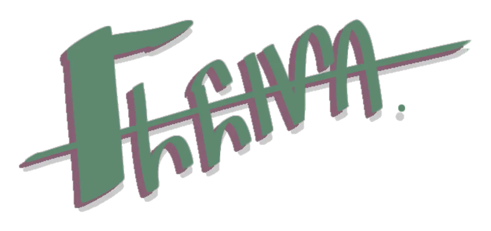

Versão programável com máscara CSS.
Laboratório de marca
Jitter Flêiva
Passe o mouse, navegue com Tab ou pressione a marca.
Arquivo colorido otimizado para uso estático.
Laboratório de marca
Versão programável com máscara CSS.

Arquivo colorido otimizado para uso estático.